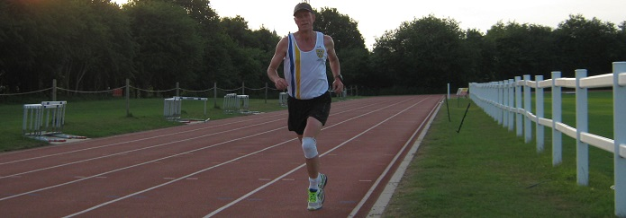

Ted Scott won the June handicap but Chris Desmond still leads the series. Next race: 11 July - 5 miles. Details here.

20 June 2017
Ted Scott won the June handicap but Chris Desmond still leads the series. Next race: 11 July - 5 miles. Details here.